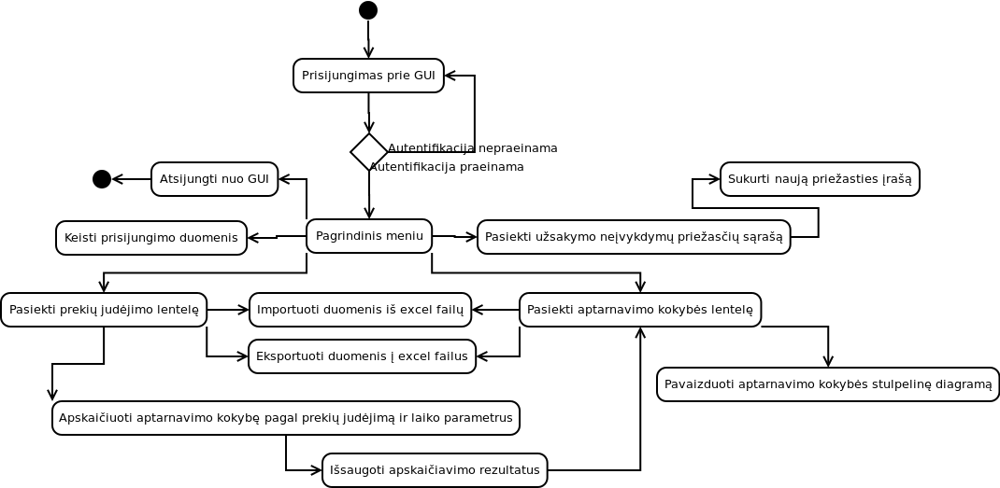

Dream Team
Klasių diagrama
Sukurta klasių diagrama. Naudodamiesi šia schema suprojektuosime ir duomenų bazę.

Vartotojo ir veiksmų sekos diagramos
Jau esame sukūrę vartotojo ir veiksmų sekos diagramas!
Activity diagrama:
{kind=link}
User case diagrama:

Mūsų užduotis
Darbo tikslas: sukurti įrankį, kuris leistų išmatuoti aptarnavimo kokybę pagal nustatyto periodo prekių judejimą.
Turi būti numatytos šios galimybės:- Sukurti (redaguoti) užsakymo eilutės neįvykdymo priežasčių sąrašą;
- Duomenų importo-eksporto galimybes iš/į excel failus;
- Aptarnavimo kokybės skaičiavimas už periodus: savaitė, mėnuo;
- Rezultatų saugojimas ir grafinis atvaizdavimas;
Sprendimas turi būti parengtas Python/Django ir MySQL technologijų pagrindu.
Darbų grafikas:| Terminas | Darbai |
|---|---|
| Rugsėjo 30d. | Parengti specifikaciją ir viską paruošti tinklapyje, pateikiant komandos informaciją. |
| Lapkričio 4d. | Suprogramuoti projektą pagal specifikaciją. |
| Gruodžio 2d. | Pilnai ištestuoti projektą ir ištaisyti rastas klaidas, paruošti finalinę versiją. |
| Gruodžio 16d. | Parengti projekto atsiskaitomąją prezentaciją. |
Darbai Rugsėjo 23d. - Rugsėjo 30 dienoms: Petkus padaro UML vartotojo ir veiksmų sekos, user-friendly interface maketas. Lukas padaro puslapio maketą, sutvarko informaciją puslapyje. Karolis daro klasių diagramas ir duomenų bazės schemą. Rimantas surašo bendrinius reikalavimus projektui.
Puslapis atidarytas!
Puslapis paleistas - vyksta bandymų fazė